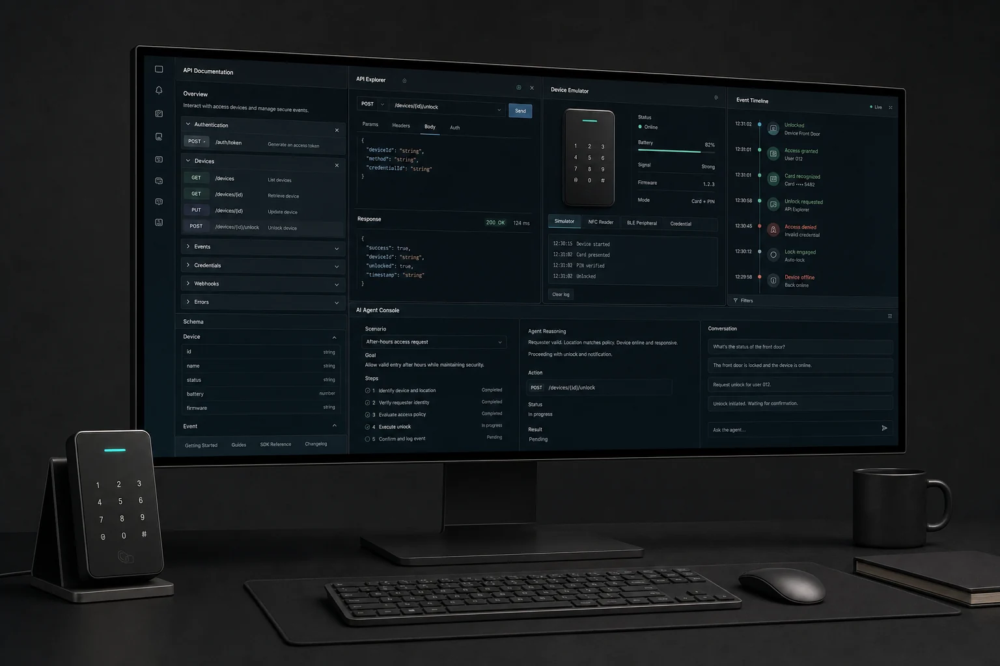
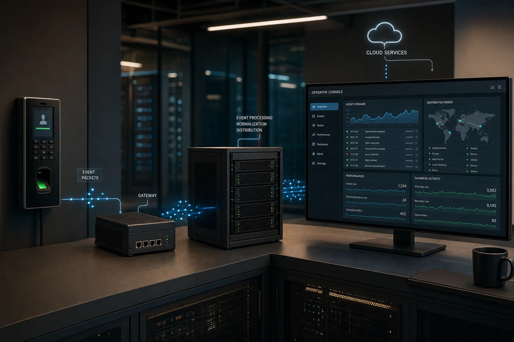
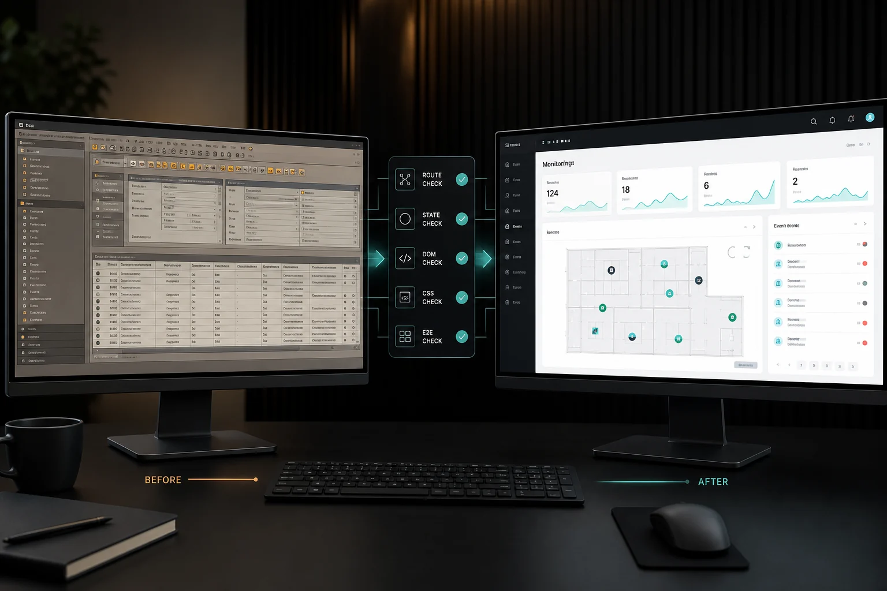
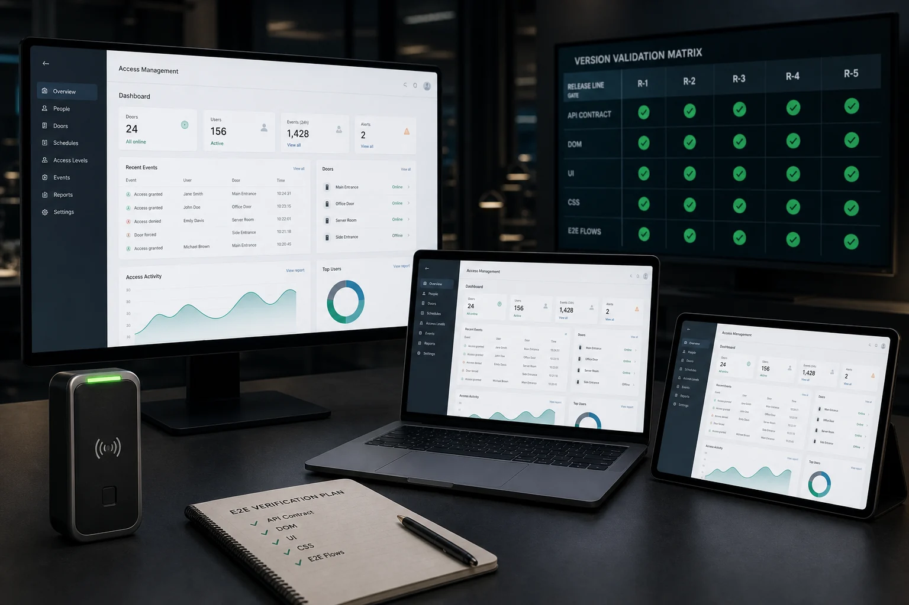
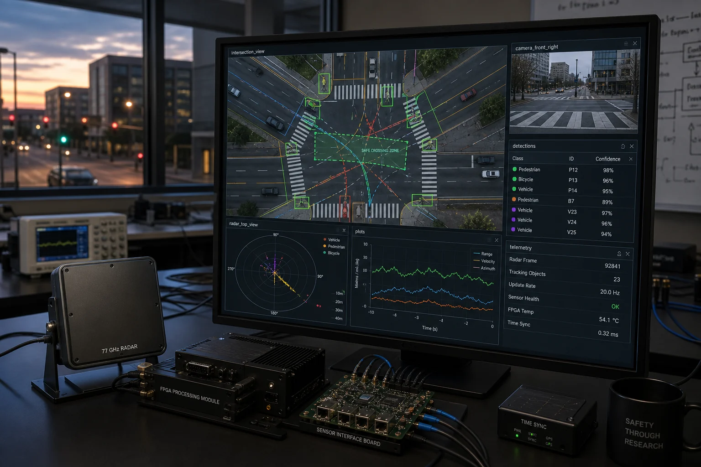
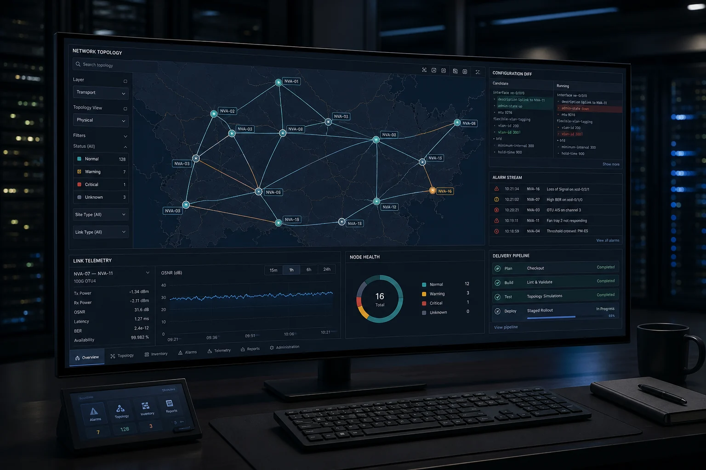
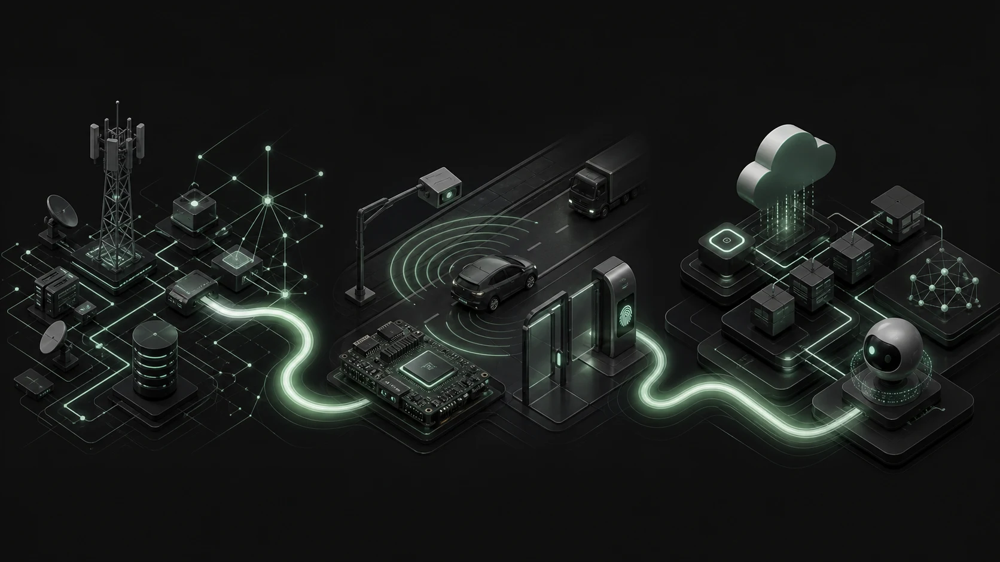

2020—2024HBrain → BioStar Core
Radar, camera, and FPGA SDKs; then device packets, capability state, identity, access, and events across C++ and Java/Kotlin services.
8 YEARS · DEVICE-TO-PRODUCT ENGINEERING
Eight years turning physical-product boundaries into platform contracts, developer experiences, and release gates.
I lead AI-native platform and product work by reading the physical-device state, protocol, server semantics, and developer workflow as one system. Implementation ends with evidence a team can operate.
장치 상태·프로토콜·서버 의미·개발자 워크플로를 하나의 시스템으로 읽으며 AI-native 플랫폼·제품 엔지니어링을 리딩합니다. 구현은 팀이 운영할 수 있는 검증 근거로 마무리합니다.
00 / CAREER DOMAIN MAP
SEWON PARK / DOMAIN MAP
Not a stack list. A connected engineering path.
Follow the evidence →Concept visualization · not a product screenshot
01 / SELECTED WORK
Original concept visualizations · not product screenshots
2026 · PRODUCTIZING
A browser API console, device SDK emulator, MCP scenario history, and Linux/AWS sandbox combined into one developer journey.


2026.07—PRESENT · TEAM LEAD
Rewriting a mixed legacy frontend with contract, unit, React, DOM, UI, CSS, and E2E verification gates.


2021—2024 · PLATFORM CORE
C++ device packets and identity events connected to Java/Kotlin services, Spring Cloud Gateway, and enterprise web products.


02 / CORE STRENGTHS
These are not abstract principles. Each strength is mapped to the work where it was tested.
추상적인 개발 철학이 아닙니다. 각 강점을 실제로 검증한 프로젝트와 일대일로 연결했습니다.
Radar, camera, and FPGA SDKs; then device packets, capability state, identity, access, and events across C++ and Java/Kotlin services.
Spring Cloud Gateway contracts evolved into a browser API console, device SDK emulator, MCP scenarios, and Linux/AWS sandbox.
The frontend rewrite is guarded by contract, unit, React, DOM, UI/CSS, and E2E gates so generated code must preserve behavior.
Competitive analysis, problem framing, feature definition, architecture, full-stack implementation, and evaluation became one product journey.
Frontend leadership and Codeit, AI bootcamp, and SK Networks Family AI Camp 27·28 mentoring turn decisions into repeatable workflows and review gates.
03 / ACTIVE RESEARCH
Only the public architecture boundary is shown. Novel methods, implementation details, and experimental decisions remain private until publication.
진행 중인 연구의 공개 가능한 아키텍처 경계만 보여줍니다. 신규 방법·구현 상세·실험 판단은 논문 공개 전까지 비공개합니다.
How can retrieval return an answer together with evidence a domain expert can inspect?
How can candidates be compared under one fair gate without assuming quantum advantage?
Public architecture boundary · methods and implementation remain private until publication.
04 / INDUSTRY FOUNDATION
Developer Portal productization, frontend modernization, version-aware E2E, and internal development-method adoption.
Device integration, server MSA, distributed events, performance work, and web-product delivery.
Telecom network management followed by radar, camera, and FPGA IoT software for traffic safety.

05 / KNOWLEDGE ARCHIVE
Writing, reading, and graduate coursework become a connected archive I can revisit, apply, and extend.
A long-form note connecting intelligence, learning, safety, and the questions engineers should keep asking.
Software design, team process, and sustainable routines—kept as notes that return to practice.
06 / CONTACT